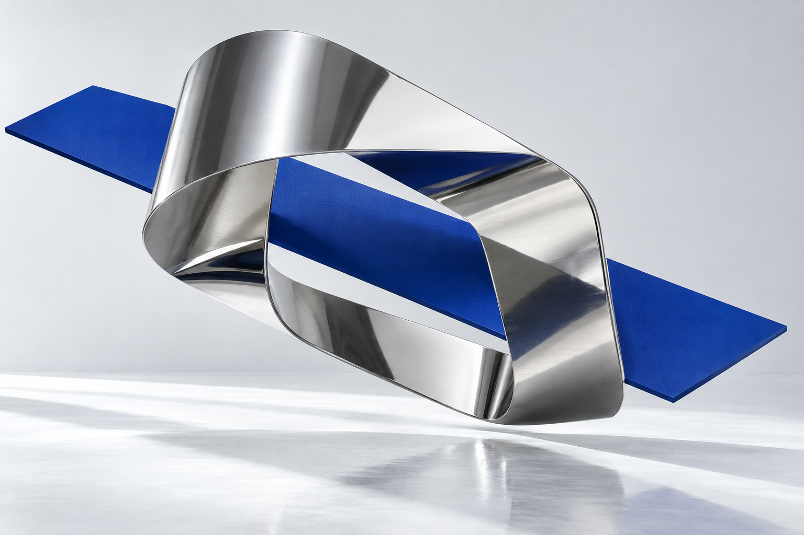

01 / LIFESTYLE
AVORA
A NEW SENSE OF EVERYDAY.아보라
생활에 감각과 기술을 더하는
라이프스타일의 새로운 가능성.
Independent minds.
Connected possibilities.

화면 속 경험에서 손에 닿는 제품까지.
우리는 디자인하고, 개발하고,
새로운 일상의 가능성을 실험합니다.
UX/UI와 소프트웨어를 시작으로 하드웨어와 라이프스타일 R&D까지. 서로 다른 전문성을 연결해 아이디어를 실제로 작동하는 경험으로 완성합니다.
경계를 넘는 네 가지 역량.
사용자에게 명확하고,
브랜드에는 고유한 경험.
보이는 UI부터 보이지 않는 시스템까지,
서비스를 하나로 연결합니다.
코드의 지능을,
만질 수 있는 제품으로.
생활의 작은 감각에서 찾는,
기술의 다음 쓰임.
기술을 보는 것에서,
기술을 느끼는 것으로.
AI NPC와 공간형 인터랙션이 만나는 XR 플랫폼.
디자인과 기술을 하나의 몰입형 경험으로 연결합니다.
리얼데이가 확장하는 세 가지 방향.
생활에 감각과 기술을 더하는
라이프스타일의 새로운 가능성.
AI와 함께 직접 만들고,
일하는 방식을 바꾸는 교육.
AI 에이전트와 비주얼이 만나
느껴지는 기술을 만드는 플랫폼.
새로운 일상의 가능성을
계속 탐구합니다.